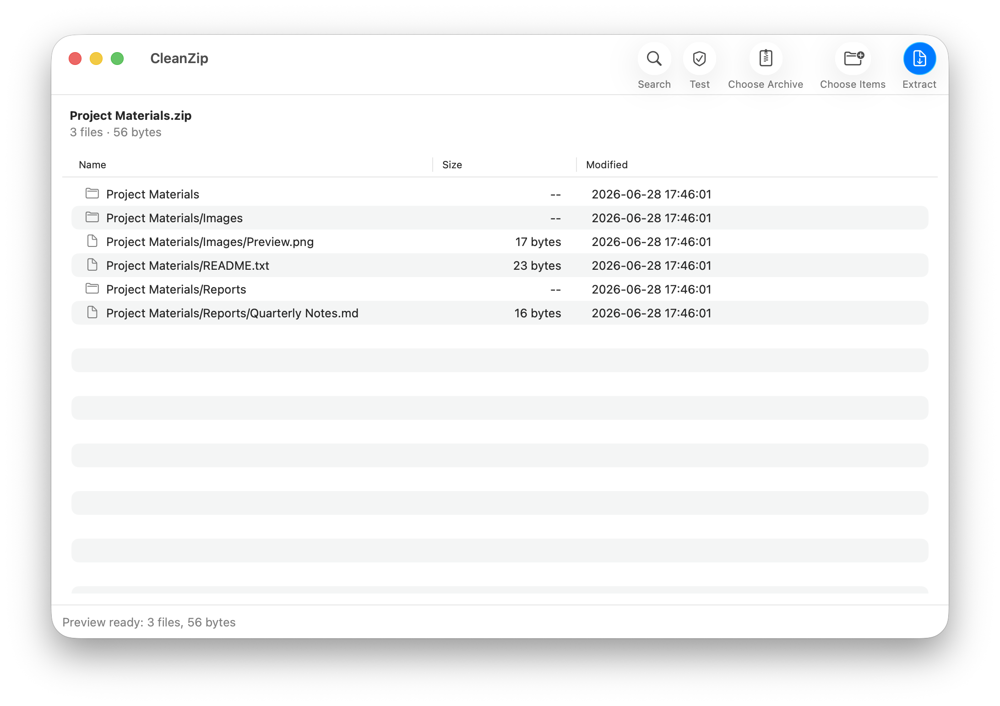
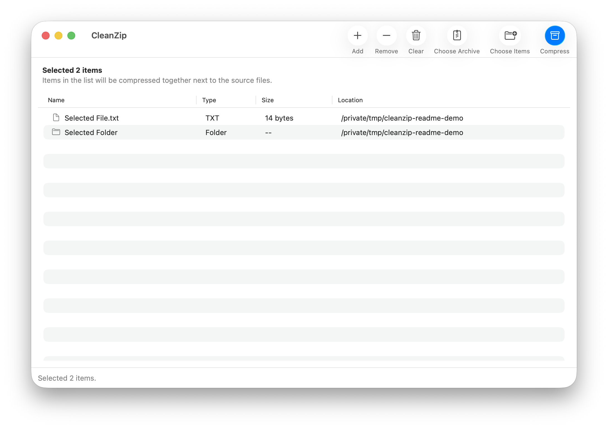

Clean ZIP output
Create ZIP files that are easier to send to Windows, Linux, web upload forms, or teammates who do not need macOS metadata.

Native macOS archive utility
CleanZip creates ZIP files without macOS metadata, previews archives before extraction, extracts common formats like RAR and 7Z, and creates split ZIP or 7Z archives.
Latest release: CleanZip 2.6.29. Local-first, MIT licensed, no permanent background service.
Screenshots

Why it is useful
Create ZIP files that are easier to send to Windows, Linux, web upload forms, or teammates who do not need macOS metadata.
Extract ZIP, 7Z, RAR, TAR, TGZ, GZ, BZ2, XZ, ZST, ISO, CAB, DMG, XAR, JAR, WAR, APK, and split archives.
Create regular ZIP, split ZIP, regular 7Z, and split 7Z archives with presets or custom sizes.
No history database, no account, no cloud upload, no archive editor, and no always-on background app.
Uses AppKit and SwiftUI, native toolbar controls, progress HUD, notifications, and Liquid Glass interface effects.
Supports English, Simplified Chinese, Traditional Chinese, Japanese, Korean, French, German, Spanish, Italian, Brazilian Portuguese, and Russian.
Format support
CleanZip uses local system tools and bundled 7zz for broad extraction support while keeping creation focused on ZIP and 7Z.
Install
FAQ
No. Operations run locally on your Mac with system tools and bundled 7zz.
No. CleanZip can extract RAR archives, but archive creation is intentionally focused on ZIP and 7Z.
No. The package is ad-hoc signed for local distribution, but it is not notarized with an Apple Developer ID.